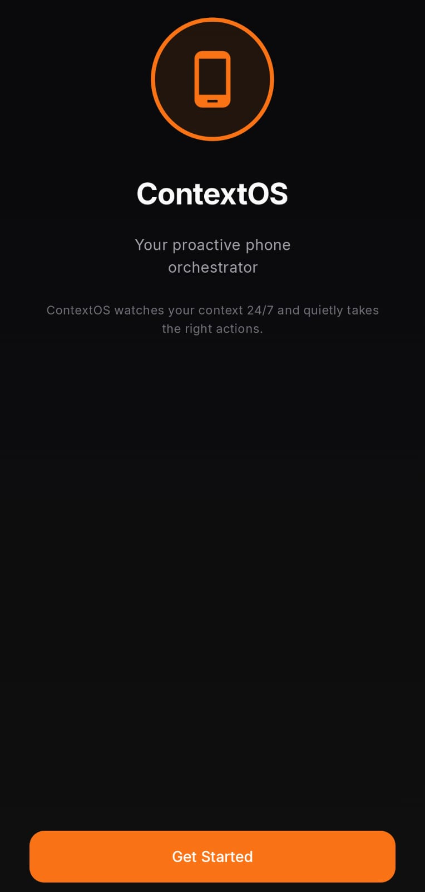
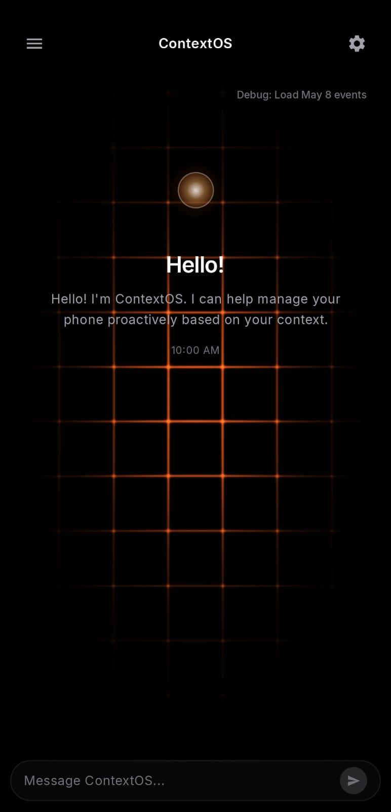
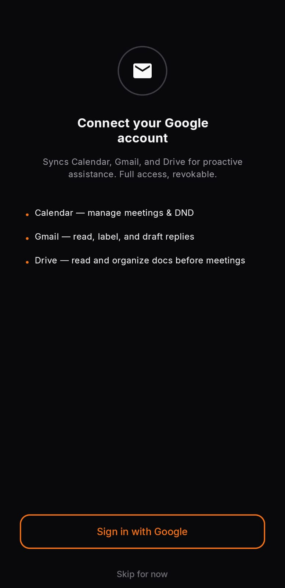
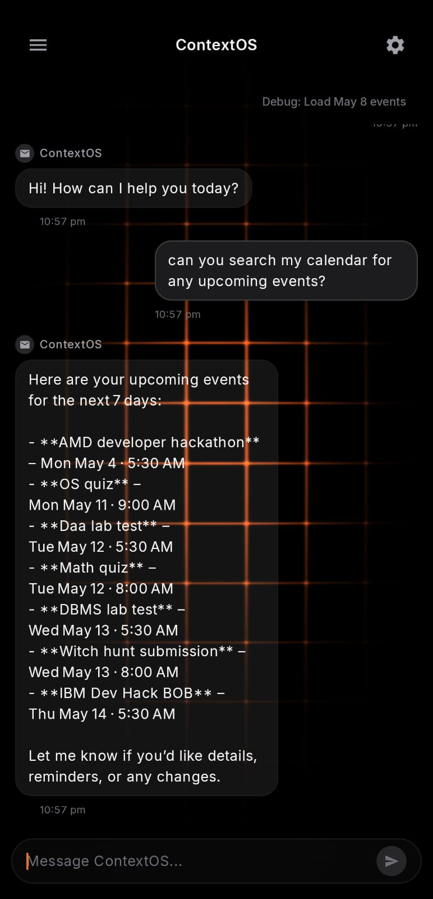
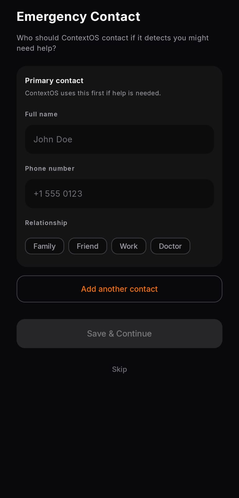
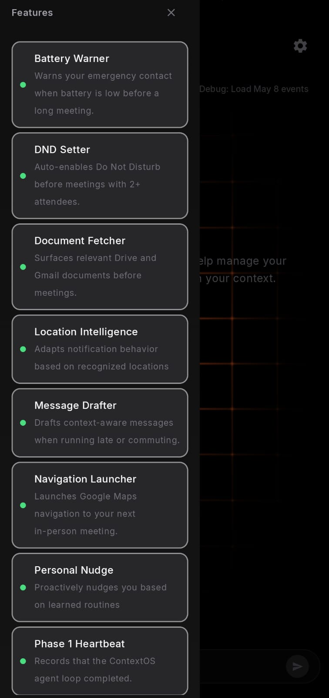
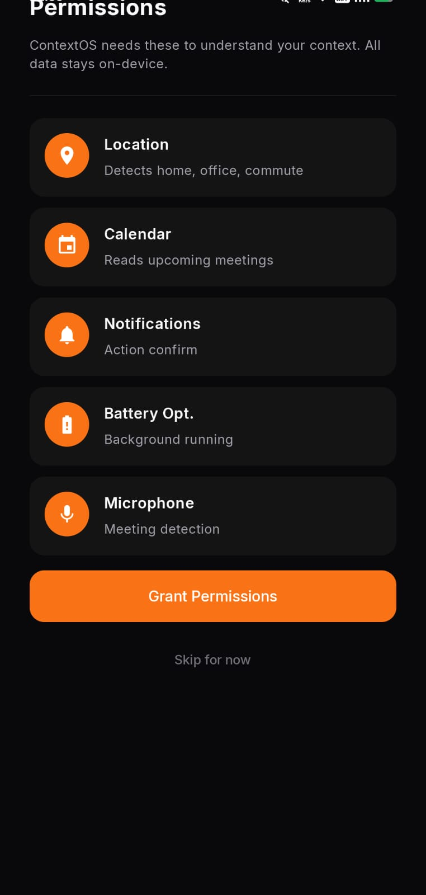
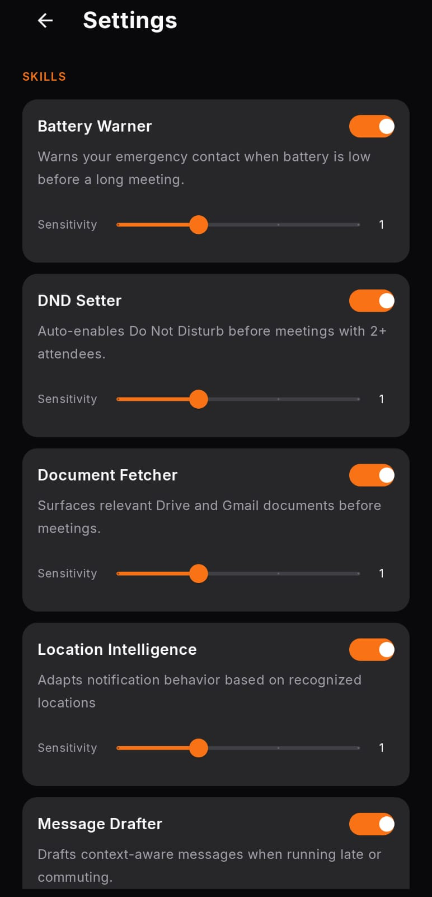
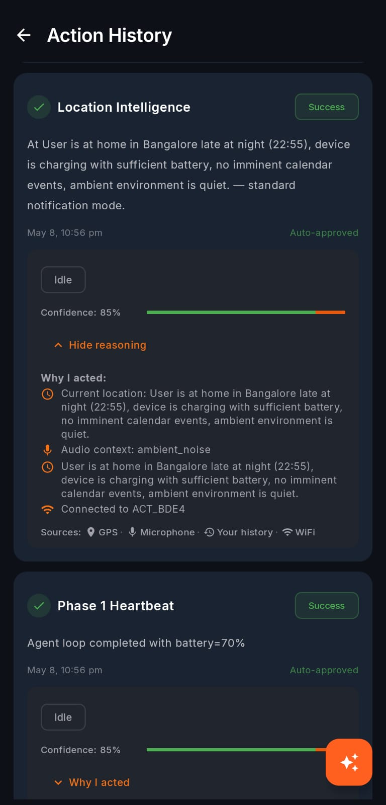

What judges can use daily
Before a meeting, it can enable DND, surface files, prepare a reply, and show why those actions were recommended.
ContextOS — The Proactive, Privacy-First Phone Orchestrator. It acts before you ask.
ContextOS is designed for the exact moments judges already live through: meetings, travel, commute, low battery, pitch prep, and follow-ups. Install once, grant the normal Android permissions, and the phone starts suggesting useful actions with a clear reason behind every decision.
Before a meeting, it can enable DND, surface files, prepare a reply, and show why those actions were recommended.
It can become a One UI orchestration layer across Galaxy phone, Watch, Buds, DeX, SmartThings, and Knox workflows.
Learn Mode asks before sensitive actions, messages stay drafts until approved, and every automation has an action log.
These screens show the real Android experience behind the website: onboarding, permissions, chat, skills, settings, and action history. Kept as a compact rail so the page stays quick to read.









Enable DND. Start navigation. Download meeting docs. Your phone waits for commands while you scramble.
A meeting interrupted by a ring. Late to a client site because navigation wasn't started in time.
ContextOS grows by adding skills to the same loop: collect context, evaluate shouldTrigger(), dispatch safely, and log why. New Samsung services can plug in without rebuilding the assistant.
ContextOS wakes every 15 minutes, builds a SituationModel of your world, and executes the right action — automatically.
dnd_setterAuto-enables Do Not Disturb before meetings.battery_warnerSMS alert when battery is critically low.navigation_launcherStarts Maps when you leave a GPS cluster.message_drafterWrites context-aware SMS/emails via LLM.document_fetcherPulls meeting files from Gmail + Drive.location_intelligenceLabels Home, Office, Gym from GPS patterns.See how ContextOS handles the situations your phone ignores.
Trigger context: Calendar shows "Client Review" meeting with 4 attendees in 10 minutes. DND is off. Zoom link detected.
Agent reasoning: Meeting has 4 attendees (high importance). DND was OFF — enabling now. Zoom link in calendar → pre-opening. Q3 deck referenced in meeting title → fetching from Drive.
Trigger context: GPS detects departure from "Office" cluster. Partner waiting at home. Battery at 18%.
Gemini Flash drafts human-sounding ETA text, OpenClaw checks confidence, and the rule fallback can still trigger Maps and battery actions without an LLM.
Trigger context: GPS at unknown location. Calendar: "Q3 Review" meeting in 15 min. Multiple files in Gmail + Drive matching "Q3 Review".
Unknown location raises meeting urgency. File search uses Calendar title, attendees, and recent Gmail/Drive metadata; sensitive fields are masked before AI reasoning.
Trigger context: User is stuck in traffic. Calendar shows meeting in 15 min, ETA is 20–25 min away.
ContextOS always asks before sending. You stay in control — it just does the heavy lifting.
Trigger context: A Samsung employee starts work. ContextOS reads role, calendar, location, device state, and approved enterprise apps to prepare the right workflow before they ask.
This gives judges concrete Samsung adoption paths: sales enablement, service operations, enterprise account work, and customer support, all powered by the same ContextOS engine.
Everything runs on your device. No data leaves your phone. Encrypted storage. GDPR compliant. Clear-all-data button.
Sign in with Google account.
Calendar, Location, Contacts, Notification access — all processed on-device.
Set work hours, pin Home/Office on map, choose commute days.
Wakes every 15 min, builds your SituationModel, acts or asks.
Executes trusted, learned patterns automatically.
Asks for confirmation and learns preferences over time.
An optional agent reviews OpenClaw's recommendations before execution.
| Feature | Bixby / GA / Siri | Bixby Routines | ContextOS |
|---|---|---|---|
| Interaction model | Reactive (waits for command) | Reactive (manual rule) | ✅ Proactive — acts autonomously |
| Context awareness | Limited / basic | Trigger-based only | ✅ Deep: 15-min SituationModel |
| Learning | None | None | ✅ Routine + Preference + Location memory |
| Message drafting | None | None | ✅ LLM-powered, context-aware |
| Document orchestration | None | None | ✅ Gmail + Drive pre-meeting search |
| Processing location | Cloud-dependent | On-device (limited) | ✅ On-device first, cloud opt-in |
| Transparency | Opaque | Manual config visible | ✅ Full action log + "Why?" reasoning |
:app — Jetpack Compose UI, Navigation, ViewModels:core:service — Foreground Service + OpenClaw Agent loop:core:skills — Skill interface + 6 skill implementations:core:memory — Routine, Preference, Location learning:core:network — Calendar, Gmail, Drive, Maps API clients:core:data — Room DB, DAOs, SituationModel domain classes1. SensorDataCollector → RawSensorData (≤3s) 2. SituationModelBuilder.build() incl. calendar + memory (≤4s) 3. OpenClawAgent.analyzeSituation() → SituationAnalysis (≤2s) 4. skill.shouldTrigger() × 6 skills (≤1s) 5. skill.execute() → SkillResult → ActionDispatcher (≤3s) 6. ActionLog write to Room DB + Notification Total: 12s compute + 3s dispatch = <15s per cycle
The core ContextOS launch layer.
Context that moves beyond the phone.
A proactive orchestration layer for the Samsung ecosystem.